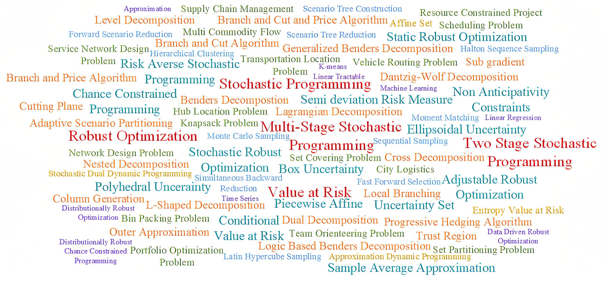

Ali Rouhani
About meI received my M.Sc. in Industrial Engineering from Shahed University in 2018, under supervision of Prof. Mahdi Bashiri. ResearchMy research focuses on the theoretical and practical aspects of decision-making under uncertainty techniques and developing solution methods for large-size problems. In particular, my research interests include
Research Focus Diagram |